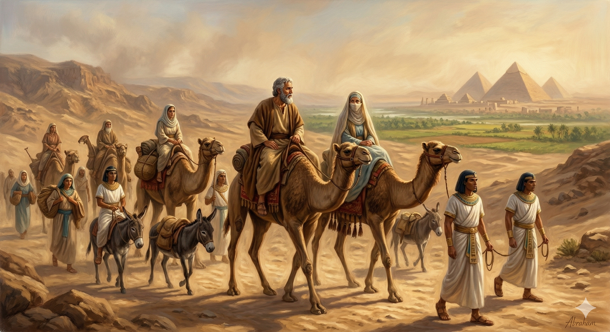

Daily Bible Character Meditation
성경 속 인물들의 삶을 통해 하나님의 이야기를 묵상합니다.
그들의 믿음, 실패, 회복 — 그 모든 순간이 오늘 우리에게 말씀합니다.
창세기 13:1–18
먼저 선택할 권리를 조카 롯에게 양보한 아브람. 손해처럼 보인 그 결단 뒤에 하나님의 더 큰 약속이 기다리고 있었습니다.
창세기 26:23–33
가장 힘든 그 밤, 하나님이 직접 찾아오셨습니다. 이삭은 제단을 쌓았고, 대적마저 화평을 구해왔습니다.
창세기 29:1–20
도망자 야곱이 우물가에서 라헬을 만났습니다. 칠 년을 며칠 같이 여긴 그 사랑, 기다림이 기쁨이 되는 이야기입니다.

창세기 12:10–20
기근을 피해 이집트로 내려간 아브람. 두려움이 불러온 거짓말, 그러나 하나님의 신실하심은 흔들리지 않았습니다.